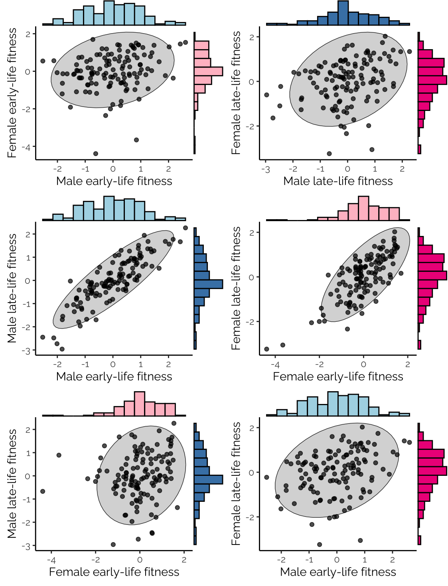
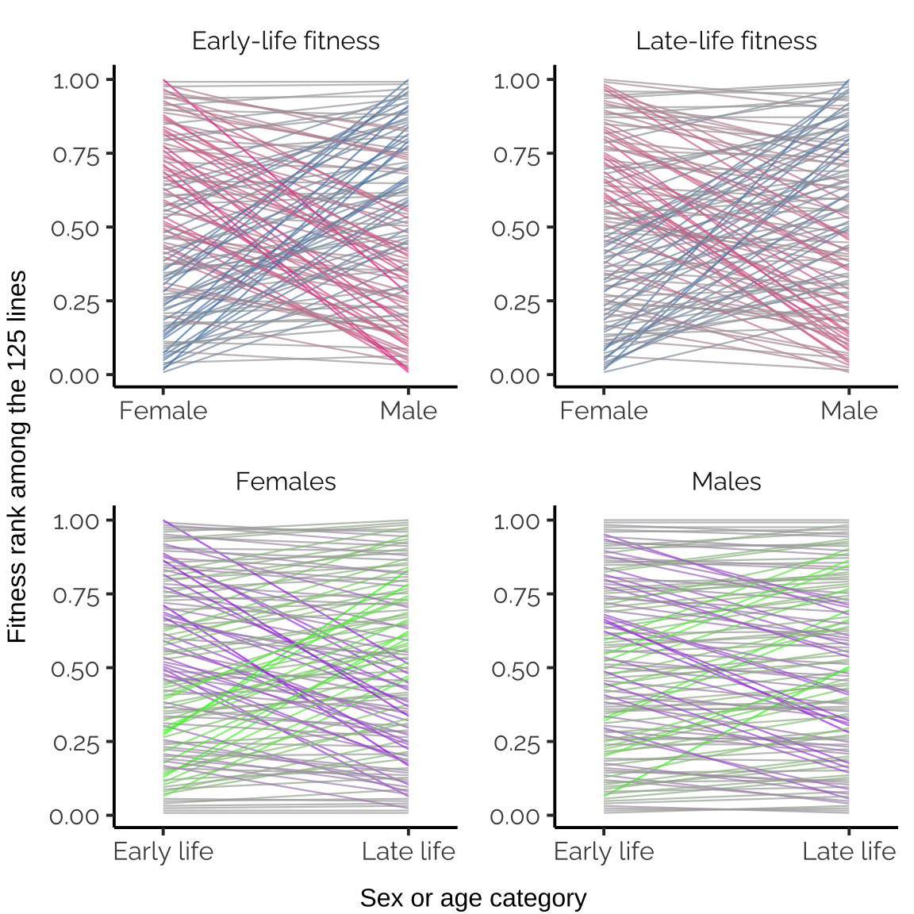

Last updated: 2023-03-16
Checks: 7 0
Knit directory: fitnessGWAS/
This reproducible R Markdown analysis was created with workflowr (version 1.7.0.4). The Checks tab describes the reproducibility checks that were applied when the results were created. The Past versions tab lists the development history.
Great! Since the R Markdown file has been committed to the Git repository, you know the exact version of the code that produced these results.
Great job! The global environment was empty. Objects defined in the global environment can affect the analysis in your R Markdown file in unknown ways. For reproduciblity it’s best to always run the code in an empty environment.
The command set.seed(20180914) was run prior to running
the code in the R Markdown file. Setting a seed ensures that any results
that rely on randomness, e.g. subsampling or permutations, are
reproducible.
Great job! Recording the operating system, R version, and package versions is critical for reproducibility.
Nice! There were no cached chunks for this analysis, so you can be confident that you successfully produced the results during this run.
Great job! Using relative paths to the files within your workflowr project makes it easier to run your code on other machines.
Great! You are using Git for version control. Tracking code development and connecting the code version to the results is critical for reproducibility.
The results in this page were generated with repository version c566513. See the Past versions tab to see a history of the changes made to the R Markdown and HTML files.
Note that you need to be careful to ensure that all relevant files for
the analysis have been committed to Git prior to generating the results
(you can use wflow_publish or
wflow_git_commit). workflowr only checks the R Markdown
file, but you know if there are other scripts or data files that it
depends on. Below is the status of the Git repository when the results
were generated:
Ignored files:
Ignored: .DS_Store
Ignored: .Rapp.history
Ignored: .Rhistory
Ignored: .Rproj.user/
Ignored: .httr-oauth
Ignored: .pversion
Ignored: analysis/.DS_Store
Ignored: analysis/correlations_SNP_effects_cache/
Ignored: code/.DS_Store
Ignored: code/Drosophila_GWAS.Rmd
Ignored: data/.DS_Store
Ignored: data/derived/
Ignored: data/input/.DS_Store
Ignored: data/input/.pversion
Ignored: data/input/dgrp.fb557.annot.txt
Ignored: data/input/dgrp2.bed
Ignored: data/input/dgrp2.bim
Ignored: data/input/dgrp2.fam
Ignored: data/input/huang_transcriptome/
Ignored: figures/.DS_Store
Untracked files:
Untracked: big_model.rds
Untracked: code/quant_gen_1.R
Untracked: code/~$in_paper_figures.docx
Untracked: data/input/genomic_relatedness_matrix.rds
Unstaged changes:
Modified: .gitignore
Modified: analysis/plot_models_variant_effects.Rmd
Modified: analysis/quant_genetics.Rmd
Modified: code/pdf_supp_material.Rmd
Modified: code/pdf_supp_material.pdf
Modified: figures/fig1.pdf
Note that any generated files, e.g. HTML, png, CSS, etc., are not included in this status report because it is ok for generated content to have uncommitted changes.
These are the previous versions of the repository in which changes were
made to the R Markdown (analysis/plot_line_means.Rmd) and
HTML (docs/plot_line_means.html) files. If you’ve
configured a remote Git repository (see ?wflow_git_remote),
click on the hyperlinks in the table below to view the files as they
were in that past version.
| File | Version | Author | Date | Message |
|---|---|---|---|---|
| Rmd | c566513 | lukeholman | 2023-03-16 | wflow_publish("analysis/plot_line_means.Rmd") |
| Rmd | 68414e9 | lukeholman | 2022-02-22 | Commit in Feb 2022 |
| html | 7449a90 | lukeholman | 2021-10-01 | Build site. |
| Rmd | 01226ab | lukeholman | 2021-10-01 | wflow_publish("analysis/*") |
| html | 8d14298 | lukeholman | 2021-09-26 | Build site. |
| Rmd | af15dd6 | lukeholman | 2021-09-26 | Commit Sept 2021 |
| html | 871ae81 | lukeholman | 2021-03-04 | Build site. |
| Rmd | a16e751 | lukeholman | 2021-03-04 | big first commit 2021 |
| Rmd | 8d54ea5 | Luke Holman | 2018-12-23 | Initial commit |
| html | 8d54ea5 | Luke Holman | 2018-12-23 | Initial commit |
library(tidyverse)
library(ggExtra)
library(grid)
library(gridExtra)
library(RColorBrewer)
library(showtext) # For fancy Google font in figures
font_add_google(name = "Raleway", family = "Raleway", regular.wt = 400, bold.wt = 700) # Install font from Google Fonts
showtext::showtext.auto()
# Load the predicted line means, as calculated by get_predicted_line_means
predicted_line_means <- read_csv("data/derived/predicted_line_means.csv")Generally there is positive covariance between line means for different traits, and all 4 measures of fitness exhibit considerable phenotypic variance across lines.
lims <- c(1.1*min(apply(predicted_line_means[,2:5], 2, min)),
1.1*max(apply(predicted_line_means[,2:5], 2, max)))
fix.title <- function(x){
x[x == "female.fitness.early" | x == "femalefitnessearly"] <- "Female early-life fitness"
x[x == "male.fitness.early" | x == "malefitnessearly"] <- "Male early-life fitness"
x[x == "female.fitness.late" | x == "femalefitnesslate"] <- "Female late-life fitness"
x[x == "male.fitness.late" | x == "malefitnesslate"] <- "Male late-life fitness"
x
}
make_figure_1 <- function(){
nice.plot <- function(df, v1, v2){
formula <- as.formula(paste(v2, "~", v1))
model <- summary(lm(formula, data = df))
r2 <- format(model$r.squared %>% round(2), nsmall = 2)
slope <- format(model$coefficients[2,1] %>% round(2), nsmall = 2)
se <- format(model$coefficients[2,2] %>% round(2), nsmall = 2)
# print(model$coefficients[2,4]) # print p-value of the correlation
# text1 <- paste("R^2 == ", r2, sep = "")
# text2 <- paste("β = ", slope, " \u00B1 ", se, sep = "")
pp <- df %>%
ggplot(aes_string(x = v1, y = v2)) +
# annotate("text", x=min(lims) + 0.1, y=max(lims), label = text1, parse = TRUE, hjust= 0) +
# annotate("text", x=min(lims) + 0.1, y=max(lims)-0.4, label = text2, hjust= 0) +
stat_ellipse(colour = "grey20", lwd = 0.5) +
stat_ellipse(fill = "grey85", geom = "polygon") +
geom_point(alpha = 0.7) +
# stat_smooth(method = "lm", level = 0, colour = "tomato") +
xlab(fix.title(v1)) + ylab(fix.title(v2)) +
theme_classic() +
theme(text = element_text(family = "Raleway")) +
scale_x_continuous(limits = lims) +
scale_y_continuous(limits = lims)
if(v1 == "male.fitness.early" & v2 == "female.fitness.early") cols <- c("lightblue", "pink")
if(v1 == "male.fitness.late" & v2 == "female.fitness.late") cols <- c("steelblue", "deeppink2")
if(v1 == "male.fitness.early" & v2 == "male.fitness.late") cols <- c("lightblue", "steelblue")
if(v1 == "female.fitness.early" & v2 == "female.fitness.late") cols <- c("pink", "deeppink2")
ggExtra::ggMarginal(pp, type = "histogram", bins = 15, xparams = list(fill = cols[1]), yparams = list(fill = cols[2]))
}
p1 <- nice.plot(predicted_line_means, "male.fitness.early", "female.fitness.early")
p2 <- nice.plot(predicted_line_means, "male.fitness.late", "female.fitness.late")
p3 <- nice.plot(predicted_line_means, "male.fitness.early", "male.fitness.late")
p4 <- nice.plot(predicted_line_means, "female.fitness.early", "female.fitness.late")
full_plot <- grid.arrange(p1, p2, p3, p4)
}
make_figure_1()
# Saving does not work (ggmarginal + showtext issue?), so get the file by saving from the HTML output
# ggsave(filename = "figures/fig1.pdf", make_figure_1(), height = 7, width = 7)
Figure 1: Correlations among estimated
line means for the four fitness components. The line means were
estimated from Bayesian mixed models that account for block effects, and
the non-independence of our early- and late-life fitness
measurements.
All possible types of lines were observed: some lines are uniformly bad, or uniformly good, or good in one sex or age class but bad in the other.
make_bonus_figure <- function(){
interaction.plot <- function(predicted_line_means, x1, x2, title, sex.or.age){
if(sex.or.age == "sex"){
x.labs <- c("Female", "Male")
cols <- c("steelblue", "darkgrey", "deeppink2")
} else {
x.labs <- c("Early life", "Late life")
cols <- c("green", "darkgrey", "purple")
}
df <- predicted_line_means %>% select(!!x1, !!x2)
df$rank.x1 <- rank(df[,1]) / max(abs(rank(df[,1])))
df$rank.x2 <- rank(df[,2]) / max(abs(rank(df[,2])))
df %>% mutate(slope = rank.x1 - rank.x2,
line = 1:length(rank.x1)) %>%
gather(key = sex_or_age, value = fitness, rank.x1, rank.x2) %>%
mutate(fitness = fitness / max(fitness),
title = title) %>%
ggplot(aes(x = sex_or_age, y = fitness, group = line, colour = slope)) +
geom_line(size = 0.4, alpha = 0.7) +
scale_color_gradient2(low = cols[1], mid = cols[2], high = cols[3]) +
scale_x_discrete(expand = c(0.1,0.1), labels = x.labs) +
theme_classic(15) +
theme(strip.background = element_blank(),
text = element_text(family = "Raleway")) +
xlab(NULL) + ylab(NULL) +
facet_wrap(~title) +
theme(legend.position = "none")
}
full_plot <- grid.arrange(
interaction.plot(predicted_line_means, "female.fitness.early", "male.fitness.early", "Early-life fitness", "sex"),
interaction.plot(predicted_line_means, "female.fitness.late", "male.fitness.late", "Late-life fitness", "sex"),
interaction.plot(predicted_line_means, "female.fitness.early", "female.fitness.late", "Females", "age"),
interaction.plot(predicted_line_means, "male.fitness.early", "male.fitness.late", "Males", "age"),
ncol = 2, left = "Fitness rank among the 125 lines", bottom = "Sex or age category"
)
}
make_bonus_figure()
| Version | Author | Date |
|---|---|---|
| 8d14298 | lukeholman | 2021-09-26 |
Bonus figure: The relative fitness ranks
for each line, for four pairs of fitness traits. The y-axis was
calculated by taking the adjusted line mean fitnesses, ranking them, and
then dividing by the number of lines. The intensity and hue of the
colour helps highlight genotypes that rank highly for one fitness
component but not the other.
sessionInfo()R version 4.2.2 (2022-10-31)
Platform: x86_64-apple-darwin17.0 (64-bit)
Running under: macOS Big Sur ... 10.16
Matrix products: default
BLAS: /Library/Frameworks/R.framework/Versions/4.2/Resources/lib/libRblas.0.dylib
LAPACK: /Library/Frameworks/R.framework/Versions/4.2/Resources/lib/libRlapack.dylib
locale:
[1] en_US.UTF-8/en_US.UTF-8/en_US.UTF-8/C/en_US.UTF-8/en_US.UTF-8
attached base packages:
[1] grid stats graphics grDevices utils datasets methods
[8] base
other attached packages:
[1] showtext_0.9-5 showtextdb_3.0 sysfonts_0.8.8 RColorBrewer_1.1-3
[5] gridExtra_2.3 ggExtra_0.10.0 lubridate_1.9.2 forcats_1.0.0
[9] stringr_1.5.0 dplyr_1.1.0 purrr_1.0.1 readr_2.1.4
[13] tidyr_1.3.0 tibble_3.1.8 ggplot2_3.4.1 tidyverse_2.0.0
[17] workflowr_1.7.0.4
loaded via a namespace (and not attached):
[1] Rcpp_1.0.10 getPass_0.2-2 ps_1.7.2 rprojroot_2.0.3
[5] digest_0.6.31 utf8_1.2.2 mime_0.12 R6_2.5.1
[9] evaluate_0.20 highr_0.10 httr_1.4.5 pillar_1.8.1
[13] rlang_1.0.6 curl_5.0.0 rstudioapi_0.14 miniUI_0.1.1.1
[17] whisker_0.4.1 callr_3.7.3 jquerylib_0.1.4 rmarkdown_2.20
[21] labeling_0.4.2 bit_4.0.5 munsell_0.5.0 shiny_1.7.4
[25] compiler_4.2.2 httpuv_1.6.9 xfun_0.37 pkgconfig_2.0.3
[29] htmltools_0.5.4 tidyselect_1.2.0 fansi_1.0.4 crayon_1.5.2
[33] tzdb_0.3.0 withr_2.5.0 later_1.3.0 MASS_7.3-58.1
[37] jsonlite_1.8.4 xtable_1.8-4 gtable_0.3.1 lifecycle_1.0.3
[41] git2r_0.31.0 magrittr_2.0.3 scales_1.2.1 vroom_1.6.1
[45] cli_3.6.0 stringi_1.7.12 cachem_1.0.7 farver_2.1.1
[49] fs_1.6.1 promises_1.2.0.1 bslib_0.4.2 ellipsis_0.3.2
[53] generics_0.1.3 vctrs_0.5.2 tools_4.2.2 bit64_4.0.5
[57] glue_1.6.2 hms_1.1.2 parallel_4.2.2 processx_3.8.0
[61] fastmap_1.1.1 yaml_2.3.7 timechange_0.2.0 colorspace_2.1-0
[65] knitr_1.42 sass_0.4.5